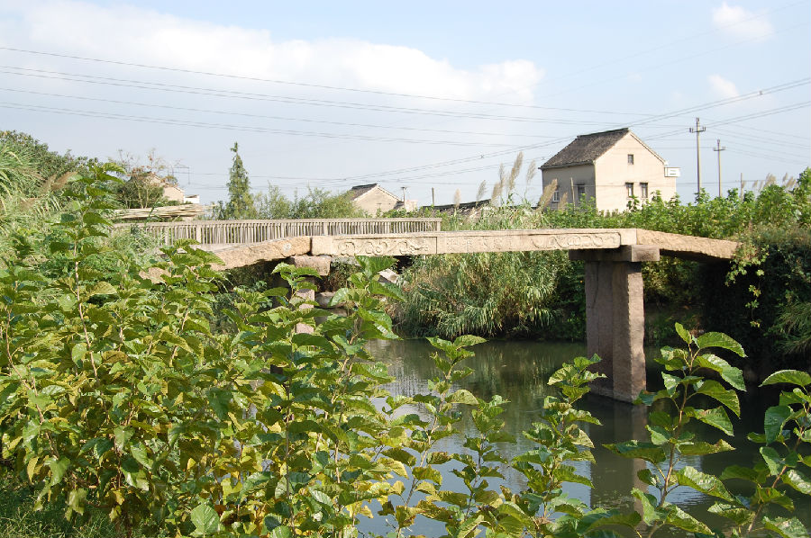

嘉兴市文物保护网 · 市级文物保护点 · 2020-11-03 · 原文

来龙桥村太平桥位于嘉兴市秀州区新塍镇来龙桥村，东距新水泥桥27米，此桥不见于地方志，始建年代不详，由桥额旁刻字可知重建于清康熙三十二年（1693）。桥南北跨太平桥港，系三孔无栏梁式石板桥。全长17米，宽1.73米，桥面和桥柱均由3块石板组成，桥底距水面的高度为2.9米，桥面当中为纵排小短石板，其中南8块，中间12块，北8块。北落坡存3级石阶，南落坡被水泥平铺直接与岸相连。东西桥额刻“重建太平桥”，旁镌“康熙三十二年”小字，无桥联。桥身刻蟠螭等纹，天磐石无纹饰。此桥曾处在重要的水上交通要道上，做工考究，保存较好，在当地古桥中属精品，具有较高的历史和艺术价值。2010年公布为嘉兴市文物保护点。